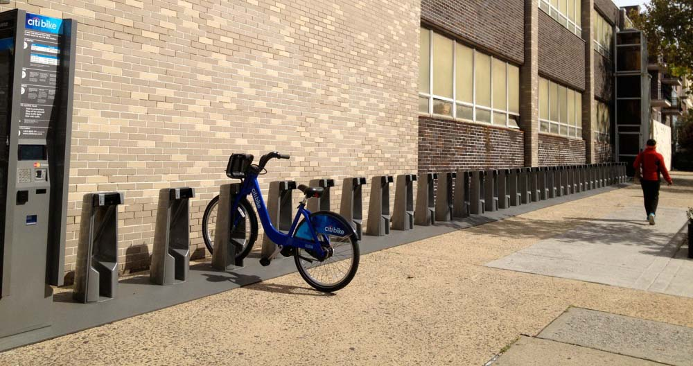
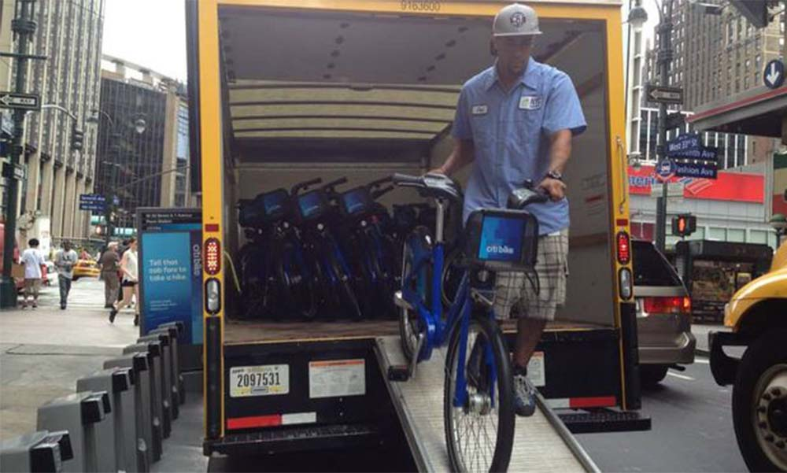

I set out on my spring break trip in the beautiful morning over Central Park, where I checked the app on my iPhone to locate the nearest docking station of Citi Bike, New York’s new bike sharing system. I wanted to circle around this iconic park, wonderful park in the heart of Manhattan which is listed by Tripadvisor as number 1 to do in the city. As a tourist that holds 24-hour access pass, I had 30 minutes to explore the park on a bicycle before being charged a fee. I had taken 24 minutes to enjoy the breathtaking views from flat, hilly, scenic terrain of the park and returned the bike back to the same docking station.
My trip in the evening later went badly. After capturing remarkable attractions with my Canon 600D in Times Square, I found a station in the intersection of Broadway and W 41 St. Intended to pedal to my 6 p.m. dinner, I didn’t find any bikes attached to the docking station. I realized that it was rush hour, the time for people to go home from work. While I was wondering many people use the bikes for commuting to work causing empty stations, a truck with “Citi Bike” large logo written on its container arrived 15 minutes later. The driver went out from the truck and opened up the container’s door, lifting the blue bikes out and placing them into the chunky gunmetal gray slots that rose up from the sidewalk. Though still amazed, I inserted my little rectangular plastic “key” and pulled one bike to pedal to my dinner.
 Bike station with empty docks in Times Square.  Citi Bike staff filling empty docks by the bicycle truck.Citi Bike as well as other bike sharing programs have potential to revolutionize the city life, not just in New York. While New York has the nation’s largest with more than 6,000 bikes and 300 docking stations, the Capital Bikeshare system in DC has been running for almost 5 years. What makes the programs special and potentially game-changing is that we only possess the bicycle while we are riding it. We pick it up, use it and leave it. If I bike to work using my own bicycle, I have to worry about locking it, ride it back to my home again, even when the weather has changed, or simply my mood to ride bike changed.
The bikes save time while expanding the parts of a city that we can reach quickly and easily. They are a type of public transit that provides the same mobility as personal private transport, without the costs or burdens, as well as increase the flexibility of the transportation system. With bicycles eventually distributed all around the city, I could see rich combination of bike, taxi, cab, subway, bus, and private car in our daily lives. However, as the system grows, problems like what I faced in Times Square occurred: empty docks. But the docks cannot be fully occupied also, since riders will need empty docks to drop their bikes.
Full bike docks can be even bigger problem. If the dock is empty, we can just go and get the subway or a bus. But when it is full, and we are on a bike, we have to cycle around with the meter running and find a nearby bike station that is not full. Thus, the bike share company has to maintain the balance between available bikes and empty docks across the city, in order to optimize the system. It will be beneficial to plan the system if the company understands which stations are often used by commuters and which are used by leisure riders, like what I did in Central Park. However, distinguishing the stations in such types are also not easy, since the riders are not asked to let the system know. So, can we classify affordances of bikeshare stations into commuters and leisure riders?
In order to answer this question, we used trip history data provided by Citi Bike (NYC) and Capital Bikeshare (DC) to look for interesting footsteps in the data. Citi Bike and Capital Bikeshare provide cleaned dataset to public through their website:
Capital Bikeshare gives more than 300 stations location information in DC, including the latitude and longitude coordinates in XML format, whereas Citi Bike also provides more than 300 stations in NYC in JSON format. Both bike sharing systems provide detailed trip history data in CSV format (quarter based for Capital and monthly based for Citi), including trip duration, start/end station, user type, bike ID, and timestamp. However, unlike Citi Bike, Capital Bikeshare doesn’t provide a rider’s profile that indicates gender and age, so taking a rider’s profile into our analyses will not be possible. Compared to Capital Bikeshare data (the company has been running the system since 2010), Citi Bike just started in July 2013. In order to make comparisons fairly, we use the Capital Bikeshare's 2011 data and Citi Bike's 2014 data after allowing for a couple quarters of “start up lag” in the system and business. According to data, there are more than 1.2 million trips generated in 2011 for DC and 8 million trips in 2014 for NYC.
We then cut the dataset into round trips and one-way trips. According to an analysis in Chicago’s bike challenge, round trips represent riders that bike for leisure, exercise and other social activities, cycle from and to the same point A, while one-way trips show people riding with intent, getting from point B to point C or vice versa. Where are they located in the city? Can we predict a station affordance from its location? Learning the round trip and one-way trip stations’ location will be useful to see if the surroundings attract different riders to use bike for fun or for commuting.
Round trip: bike for leisure, one way trip: riding with intent.That being said, we can see stations in the NYC’s most frequent trips below consist of round trip, one-way trip, and both of them. As can be seen from the map, round trip stations are found in Lower Manhattan, Rockefeller Park and New York City Hall. This shows that leisure riders love to enjoy the greenways and scenic views by riding in the side of Hudson River and West Channel that close to Brooklyn bridge. Round trip stations are also found in Central Park. Although stations in Central Park contain both trips, they are actually going to different stations still in Central Park. Similar to stations in Lower Manhattan, beautiful views offered by Central Park attract leisure riders to cycle around the park, just for fun or exercise.
In the other hand, stations with one-way trips are found in the Midtown, the largest central business district in the US where highest employment density is found. Some of the city’s most iconic buildings are in this area, including Empire State building, the Chrysler building, the United Nations Headquarters, and world famous commercial zones such as Rockefeller Center, Broadway and Times Square. No wonder I was having trouble to find bike here, as the area is the most popular bikeshare commuting in the city. Workplaces in this business district attract workers coming from all around the city, using bikes as a “last mile” transit from the subway stations they took or bus stops they arrived at. As can be seen from the population density graph, the one-way stations have relatively less dense population compare to other regions.
Stations with the most frequent trips in NYC. Population density in NYC (source: Census Tract).Same goes with the stations in DC below that consist of round trips, one-way trips, and both of them. As can be seen from the map, round trip station is found in the Smithsonian grounds. Similar to NYC, leisure riders are found in the parks, where people can enjoy iconic Washington monument, White House, remarkable Smithsonian castle, Lincoln memorial, while cycling around the area to exercise. The city’s major attractions and breathtaking view in the side of Potomac river and Washington channel again invite leisure riders to pedal the bicycle.
Dupont Circle attracts both one-way and roundtrips as it became city’s two functions: park and transit central, where commuters from Dupont Circle metro station and many bus stops transit in/out.
Compare to NYC, DC’s one-way trips vary by location throughout the city, one of which is the Logan Circle area (two yellow circles beside the orange Dupont Circle) that is known as the city’s densest region. One-way trips are found in the dense area of the city, see the regions with red scale that have more than 26,000 people per square mile. The stations with one-way trips are also found in the city’s major metro stations, such as Union Station and East Capitol transit terminal (transit central in Lincoln Park) as well as commercial region such as Eastern Market and Hechinger Mall.
Stations with the most frequent trips in DC. Population density in DC (source: Census Tract).As we now understand that one-way trip and roundtrip depend on station’s location, whether it is surrounded by parks, commercial buildings, tourist attractions, or it is located in highly dense region and close to metro station, bikeshare station attracts different types of riders: commuters and leisure riders. Next, can we classify the stations based on trip duration? Riders may use bike longer or shorter depending on their purpose. If the distribution of trip duration between one-way and roundtrip is different, we can use trip duration to build a model for predicting station affordances.
Thus, we count the trip duration for both one way and round trip in NYC and DC, then plot into the below histogram. We hoped to see the difference on the distribution between one way and round trips, but as we can see, the results are almost similar for all plots, different from our expectation. The distribution’s peak is in the middle, less than 1,000 seconds or 15 minutes, and tends to decrease as the longer trips take time. Most of the riders use bike less than 30 minutes, which is reasonable since both Citi Bike and Capital Bikeshare will only charge fee for the longer bike trip. From the plots, we can conclude that trip duration cannot be used to classify stations based on the rider types.
Distribution of trip duration for one way trips and round trips in NYC and DC.Now, can we classify the stations based on daily ridership pattern? We hope to see the difference on daily ridership between one way and round trips, since people who commute to work have to follow the working schedule which is typically 9am to 5pm. If this is different, we can build a model based on daily ridership to predict station affordances. We plot a heatmap that shows daily ridership pattern for one way trip in NYC and DC as below.
Daily ridership in NYC one way trip. Daily ridership in DC one way.We can see that there is a spike of bike usage in above daily ridership centered around 9am and 6-7pm. As expected, this proves that one-way trips mostly contain riders that commute to work, since more than 60% of the riders are found during rush hour traffic times in NYC and more than 40% of the riders in DC. This is interesting because if the pattern for round trip is different, we can predict station affordances based on daily ridership. Let’s see the result when we plot daily ridership for round trips in NYC and DC as below.
Daily ridership in NYC round trip. Daily ridership in DC round trip.The above daily ridership graphs show visibly different pattern from one way trips that centered around rush hour times. Here, there is no discernable difference in weekday patterns over time, but there are heavy spikes over the weekends, showing riders are using bike during their free time, most likely for fun or exercise. We can conclude that the round trip stations do not attract commuters, but invite leisure riders instead due to their strategic location, e.g. parks, as mentioned in the previous city maps.
Discussion
The graphs tell us bikeshare stations in NYC and DC consist of different trip patterns, one way and round trip, that impact ridership. However, there are several limitations exist in this findings.
First, actual paths of bike riding are not provided in the dataset. By knowing the paths we will be able to clearly identify where the riders go from certain stations. For example, the paths can give us information about the routes that are popular for biking in Central Park or cycling in the side of Hudson River as well as commuting routes for riders who bike to work. Knowing this will be helpful for identifying why people depart to and arrive from the stations. Thus, this article relies on the surroundings that close to the stations in the city’s maps of most frequent trips.
Second, personally identifiable data is also not provided, such as rider’s ID, to help make a more detailed analysis to predict the riders themselves, not station affordances. However, getting this kind of data might caught us in privacy or ethical issue.
Finally, we currently do not have quantifiable data of population density, socioeconomic status, job employment density on each region in NYC and DC, as well as building data that include number of city attractions, shops, and restaurants in certain regions. This data will enable us to do more quantitative analysis for each station and build the actual model to predict station affordances given several aspects that might impact type of ridership.
Conclusion
Clearly, the two types of bike trips, oneway and roundtrip in DC and NYC, can be distinguished based on the daily ridership pattern but not with trip duration distribution. From the rush hour pattern, we can argue that commuters are found in stations that include one way trips, whereas riders with roundtrips use bikes for leisure. Furthermore, several aspects also impact whether stations are often used by commuters or leisure riders to use bikes, such as location to commercial buildings, parks and population density. For future research, knowing all of these is beneficial in building a model that takes all of the aspects into account in predicting a station usage by commuters or leisure riders.